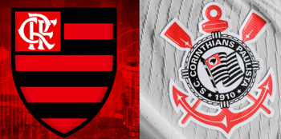
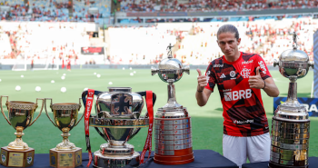

O Flamengo apresentou neste terça-feira seu novo técnico do time profissional, Filipe Luís. Depois de comandar as categorias Sub-17 e Sub-20 do clube ao longo de 2024,ele foi escolhido para substituir Tite, na condição de técnico efetivo, com contrato até dezembro de 2025. Um dos pontos positivos ressaltados pelo presidente Rodolfo Landim na apresentação foi a proximidade de Filipe Luís com o elenco. Ele foi lateral do time rubro-negro entre 2019 e 2023. Ao todo, treinou com 21 jogadores. Tem os prós e contras. O pró é que conheço esse grupo como ninguém, eu sei das lideranças e o que acontece. Eu estava presente nesse grupo há cinco anos. Acho que só chegaram três ou quatro jogadores depois que me aposentei, eu conheço todos eles. E eu sei que vou tomar decisões que vão incomodar alguns jogadores e que alguns deles vão ficar bravos comigo, mas não é com o Filipe Luís pessoa, é com o Filipe Luís treinador . É importante separar — disse.
Uma das missões de Filipe Luís será tentar recuperar o bom futebol do time que, nesta reta final da temporada, apresenta uma queda de rendimento, que culminou na desclassificação da Libertadores e no distanciamento para os líderes do Brasileirão. Essa melhora do grupo pode passar pela recuperação de um amigo de longa data do novo técnico, o atacante Gabigol, que vive momento de baixa. — Eu sei da capacidade que tem o Gabriel, não importa o tempo de contrato, se são dois meses, dois anos ou cinco anos. Eu vou dar a vida por ele e por todos os jogadores para melhorar individualmente para que joguem coletivamente organizados. Que eles sejam peças dessa engrenagem, que façam a equipe funcionar — comentou. — E eu vou fazer de tudo que está ao meu alcance para recuperar o melhor nível dele, o alto nível dele e o alto rendimento que ele tem e que já teve. E, assim que ele começar a falar no campo e começar a ser o Gabriel que eu conheci, com certeza ele irá recuperar os minutos de que ele precisa para poder ter uma sequência e desempenhar o melhor futebol dele — completou. O tempo para pôr em prática seus conceitos e planos será curto. Filipe Luís terá nesta quarta-feira a responsabilidade de levar ao Maracanã um Flamengo competitivo para enfrentar o Corinthians no jogo de ida da semifinal da Copa do Brasil. O sucesso na competição pode salvar o ano cheio de tropeços do clube da Gávea.

Agora o técnico tenta otimizar seu tempo. Desde que acertou a ida ao profissional, na manhã de segunda-feira, ele começou a estudar intensamente o adversário de quarta para manter o time no páreo. — Realmente é pouco tempo em apenas dois treinos, mas vou fazer alguns ajustes necessários nessa equipe e, pouco a pouco, implementar o meu modelo de jogo. Quero que seja um time muito incômodo para o adversário, que saiba competir em todas as fases do jogo, e que seja um time compacto. Espero poder ver isso nesse jogo, mas a gente sabe que joga contra um adversário que está numa crescente e que vem para incomodar. Filipe Luís fez parte do elenco rubro-negro entre 2019 e 2023. E já treinou com 21 jogadores do atual plantel: Matheus Cunha, Rossi, Léo Pereira, David Luiz, Cleiton, Fabrício Bruno, Varela, Wesley, Ayrton Lucas, Erick Pulgar, Gerson, Allan, Matheus Gonçalves, Lorran, Arrascaeta, Gabigol, Bruno Henrique, Michael, Pedro, Cebolinha e Luiz Araújo. O treinador assume a equipe principal com três auxiliares técnicos: Ivan Palanco, Márcio Torres e Daniel Alegria. Além deles, o preparador físico Diogo Linhares também formará a comissão técnica. Ivan, Márcio e Diogo trabalharam com o técnico no sub-20, e Daniel somente no sub-17.
Realmente é pouco tempo em apenas dois treinos, mas vou fazer alguns ajustes necessários nessa equipe e, pouco a pouco, implementar o meu modelo de jogo. Quero que seja um time muito incômodo para o adversário, que saiba competir em todas as fases do jogo, e que seja um time compacto. Espero poder ver isso nesse jogo, mas a gente sabe que joga contra um adversário que está numa crescente e que vem para incomodar. Desde ontem de manhã venho preparando e estudando ao máximo o Corinthians para fazer um grande jogo e recuperar o carinho da torcida. Eu acho o melhor jogo para poder estrear que seja um jogo importante. Um jogo onde tem pressão, peso, uma semifinal. Quando eu jogava, o mais difícil era motivar para um jogo que não tivesse muita transcendência, ou até mesmo numa fase do campeonato em que o time não consegue se motivar tanto. Nesse jogo, não é preciso motivar ninguém. Os jogadores estão super motivados, todos querem passar. E, para isso, precisamos fazer um jogo de excelência e tentando ir recuperando a confiança para poder fazer com que os jogadores se sintam confortáveis com a bola, onde eles possam saber perfeitamente onde o companheiro está. E que a qualidade possa se juntar e aparecer cada vez mais nesse modelo de jogo.
Depois de 14 temporadas no futebol europeu, Filipe Luís retornou ao Brasil em meados de 2019 para defender as cores do Flamengo. Na equipe carioca, o experiente defensor não teve problemas para se adaptar e fez parte de um grupo que marcou época. Foram 10 títulosao todo, com duas Libertadores,dois Brasileiros e uma Copa do Brasil. Após 175 jogos pelo Flamengo, com 111 vitórias, 32 empates, 32 derrotas e quatro gols marcados, Filipe Luís se aposentou no final de 2023. Ao todo, o defensor conquistou mais de 20 títulos ao longo de duas décadas como jogador profissional. Meses após encerrar a carreira como jogador, Filipe Luís iniciou sua trajetória como treinador em janeiro de 2024. Ele assumiu o time sub-17 do Flamengo, onde somou 11 vitórias em 13 jogos e foi campeão da Copa Rio. Em junho, foi promovido ao sub-20 e somou 11 vitórias em 16 jogos, conquistando a Copa Intercontinental, o Mundial de Clubes da categoria. após a demissão de Tite, o Flamengo confirmou Filipe Luís como treinador interino do time profissional. Um ano após deixar os gramados, o ex-lateral terá a missão de reconduzir o Flamengo ao caminho das vitórias.
| Clube | Jogos | Gols | Assistências | Média | Participações diretas |
|---|---|---|---|---|---|
| Flamengo | 176 | 4 | 9 | 0.02 | 13 |
| Atlético de Madrid | 333 | 12 | 27 | 0.04 | 39 |
| Chelsea | 26 | 1 | 0 | 0.04 | 1 |
| Deportivo La Corunâ | 135 | 8 | 6 | 0.06 | 14 |
| TOTAL | 670 | 25 | 42 | 0.04 | 67 |